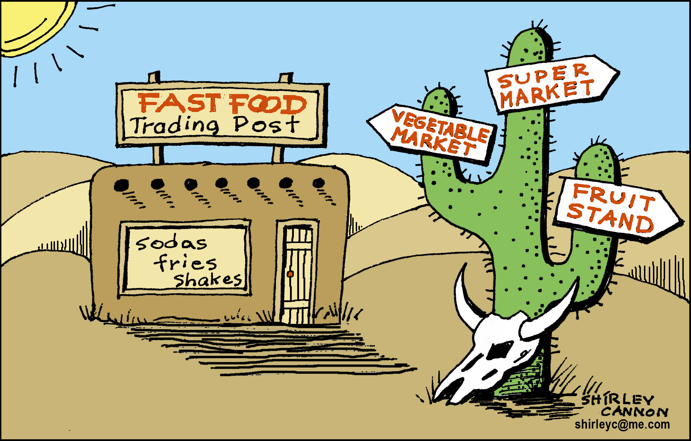

How to find your way out of a food desert
Ordinary citizens have been using the internet to draw attention to the lack of healthy eating options in inner cities
Over the last few months, a survey has been carried out of over 200 greengrocers and convenience stores in Crown Heights, a neighborhood in Brooklyn, New York. As researchers from the Brooklyn Food Association enter the details, colorful dots appear on their online map, which display the specific location of each of the food stores in a handful of central Brooklyn neighborhoods. Clicking on a dot will show you the store's name and whether it carries fresh fruit and vegetables, wholegrain bread, low-fat dairy and other healthy options.
The researchers plan eventually to survey the entire borough of Brooklyn. ‘We want to get to a more specific and detailed description of what that looks like’, says Jeffrey Heehs, who leads the project. He hopes it will help residents find fresh food in urban areas where the stores sell mostly packaged snacks or fast food, areas otherwise known as food deserts. The aim of the project is also to assist government officials in assessing food availability, and in forming future policies about what kind of food should be sold and where.
In fact, the Brooklyn project represents the intersection of two growing trends: mapping fresh food markets in US cities, and private citizens creating online maps of local neighborhood features. According to Michael Goodchild, a geographer at the University of California at Santa Barbara, citizen map makers may make maps because there is no good government map, or to record problems such as burned-out traffic lights.
According to recent studies, people at higher risk of chronic disease and who receive minimal incomes for the work they do, frequently live in neighborhoods located in food deserts. But how did these food deserts arise? Linda Alwitt and Thomas Donley, marketing researchers at DePaul University in Chicago, found that supermarkets often can’t afford the amount of land required for their stores in cities. City planning researcher Cliff Guy and colleagues at the University of Leeds in the UK found in 2004 that smaller urban groceries tend to close due to competition from suburban supermarkets.
As fresh food stores leave a neighborhood, residents find it harder to eat well and stay healthy. Food deserts are linked with lower local health outcomes, and they may be a driving force in the health disparities between lower-income and affluent people in the US. Until recently, the issue attracted little national attention, and received no ongoing funding for research.
Now, more US cities are becoming aware of their food landscapes. Last year, the United States Department of Agriculture launched a map of where food stores are located in all the US counties. Mari Gallagher, who runs a private consulting firm, says her researchers have mapped food stores and related them to health statistics for the cities of Detroit, Chicago, Cincinnati and Washington, D.c. These maps help cities identify where food deserts are and, occasionally, have documented that people living in food deserts have higher rates of diet-related diseases.
The Brooklyn project differs in that it’s run by a local core of five volunteers who have worked on the project for the past year, rather than trained, academic researchers. To gather data, they simply go to individual stores with pre-printed surveys in hand, and once the storekeeper's permission has been obtained, check off boxes on their list against the products for sole in the store. Their approach to data collection and research has been made possible by technologies such as mapping software and GPS-related smart phones, Google Maps and OpenStreeMap, an open-source online map with a history of involvement in social issues. Like Brooklyn Food Association volunteers, many citizen online map makers use maps to bring local problems to official attention, Goodchild says. Heehs, the mapping project leader, says that after his group gathers more data, it will compare neighborhoods, come up with solutions to address local needs, and then present them to New York City officials. Their website hasn’t caught them much local or official attention yet, however. It was launched only recently, but its creators haven’t yet set up systems to see who’s looking at it.
Experts who visited the Brooklyn group’s site were optimistic but cautious. ‘This kind of detailed information could be very useful’ says Michele Ver Ploeg, an economist for the Department of Agriculture. To make the map more helpful to both residents and policy makers, she would like to see price data for healthy products, too. Karen Ansel, a registered dietician and a spokesperson for the American Dietetic Association, found the site confusing to navigate. ‘That said, with this information in place the group has the tools to build a more user-friendly site that could be ... very helpful to consumers’, she says. ‘The group also should ensure their map is available to those who don’t have internet access at home’, she adds. In fact, a significant proportion of Brooklyn residents don’t have internet access at home and 8 percent rely on dial-up service, instead of high-speed internet access, according to Gretchen Maneval, director of Brooklyn College’s Center for the study of Brooklyn. ‘It’s still very much a work in progress’, Heehs says of the online map. They’ll start advertising it online and by email to other community groups, such as urban food garden associations, next month. He also hopes warmer days in the spring will draw out fresh volunteers to spread awareness and to finish surveying, as they have about two-thirds of Brooklyn left to cover.
Questions 1-6
Complete the notes below.
Choose ONE WORD ONLY from the passage for each answer.
Write your answers in boxes 1-6 on your answer sheet.
Data on food deserts and their effects on health
The Brooklyn Food Association
- The online map provides users with a store’s name, 1 and details of its produce
- One goal of the mapping project is to help develop new 2 on food.
- Citizen maps are sometimes made when 3 maps are unsatisfactory.
Reasons for the development of food deserts
- New research suggests that people living in food deserts often have low 4
- Some supermarkets are unable to buy enough 5 inside cities for their stores
- Small grocery stores in cities often cannot cope with supermarket 6
Questions 7-13
Do the following statements agree with the information given in Reading Passage ?
In boxes 7-13 on your answer sheet, write
TRUE if the statement agrees with the information
FALSE if the statement contradicts the information
NOT GIVEN if there is no information on this
7 A group of professional researchers are in charge of the Brooklyn project.
8 The Brooklyn project team carries out their assessment of stores without the owner’s knowledge
9 The Brooklyn project has experienced technical difficulties setting up the website
10 The city government has taken a considerable interest in the Brooklyn project website
11 Michele Ver Ploeg believes the Brooklyn project website should contain additional information
12 The rate of internet use in Brooklyn is unlikely to increase in the near future
13 Jeffrey Heehs would like more people to assist with the Brooklyn project research
---End of the Test---
Please Submit to view your score, solution and explanations.